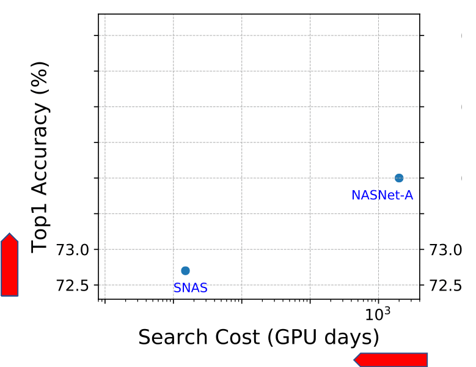
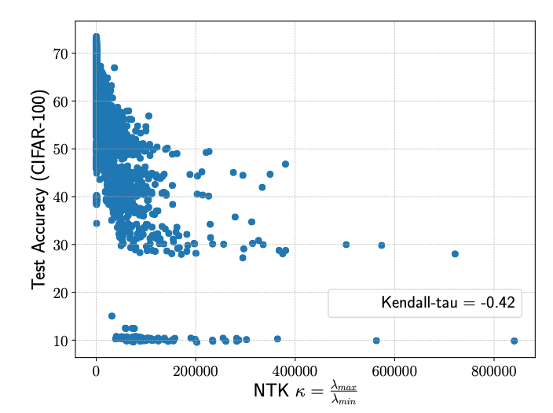
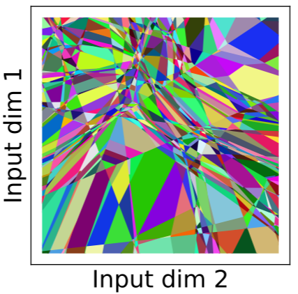
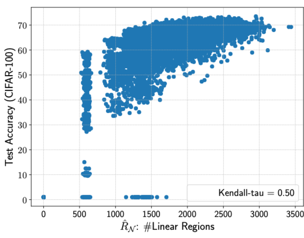
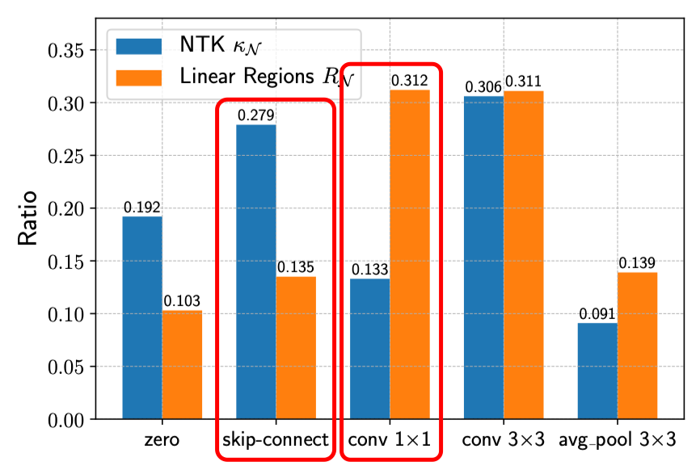
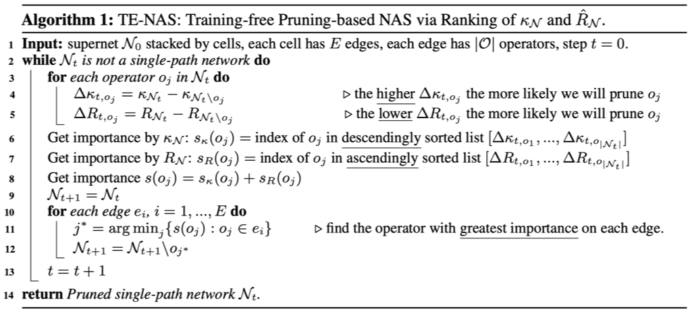
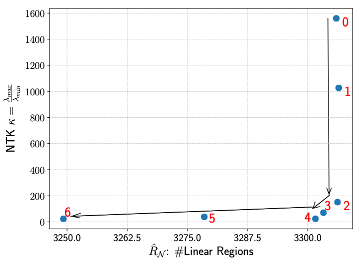

Neural Architecture Search on ImageNet in Four
GPU Hours: A Theoretically Inspired Perspective
|  |
Figure 1. State-of-the-art NAS methods on ImageNet with DARTS search space. Our TE-NAS significantly reduces search time cost, while still achieve comparable or even better accuracy than previous NAS methods.
Abstract
Neural Architecture Search (NAS) has been explosively studied to automate the discovery of top-performer neural networks. Current works require heavy training of supernet or intensive architecture evaluations, thus suffering from heavy resource consumption and often incurring search bias due to truncated training or approximations. Can we select the best neural architectures without involving any training and eliminate a drastic portion of the search cost? We provide an affirmative answer, by proposing a novel framework called training-free neural architecture search (TE-NAS). TE-NAS ranks architectures by analyzing the spectrum of the neural tangent kernel (NTK) and the number of linear regions in the input space. Both are motivated by recent theory advances in deep networks and can be computed without any training and any label. We show that: (1) these two measurements imply the trainability and expressivity of a neural network; (2) they strongly correlate with the network's test accuracy. Further on, we design a pruning-based NAS mechanism to achieve a more flexible and superior trade-off between the trainability and expressivity during the search. In NAS-Bench-201 and DARTS search spaces, TE-NAS completes high-quality search but only costs 0.5 and 4 GPU hours with one 1080Ti on CIFAR-10 and ImageNet, respectively. We hope our work inspires more attempts in bridging the theoretical findings of deep networks and practical impacts in real NAS applications.
Theoretically Inspired Training-free Indicators of Network's Accuracy
|  |  |  |  |
| (A) | (B) | (C) | (D) |
Figure 2. (A) The condition number of NTK [1] indicates network's trainability, which strongly correlates with networks' accuracies. (B) a ReLU network can split its input space into linear regions. (C) >Number of linear regions [2] indicates network's expressivity, which also strongly correlates with networks' accuracies. (D) In NAS-Bench-201 search space [3], the condition number of NTK prefers more skip-connections, while the number of linear regions favors more convolutional layers.
TE-NAS: a Pruning-based Training-free & Label-free NAS algorithm
|  |  |
| (A) | (B) |
Figure 3. (A) Starting from a supernet, we progressivly prune operators that have the least importance to the supernet's trainability and expressivity, until we reach a single-path network. (B) Visualization of search process: supernet is first pruned with bad operators that jeopardize its trainability, then try to preserve its expressivity.
Resources
Citation
@inproceedings{chen2020tenas, title={Neural Architecture Search on ImageNet in Four GPU Hours: A Theoretically Inspired Perspective}, author={Chen, Wuyang and Gong, Xinyu and Wang, Zhangyang}, booktitle={International Conference on Learning Representations}, year={2021} }
Reference
[1] Xiao, Lechao, Jeffrey Pennington, and Samuel Schoenholz. "Disentangling Trainability and Generalization in Deep Neural Networks." ICML 2020.
[2] Hanin, Boris, and David Rolnick. "Complexity of linear regions in deep networks." ICML 2019.
[3] Dong, Xuanyi, and Yi Yang. "Nas-bench-201: Extending the scope of reproducible neural architecture search." ICLR 2020.